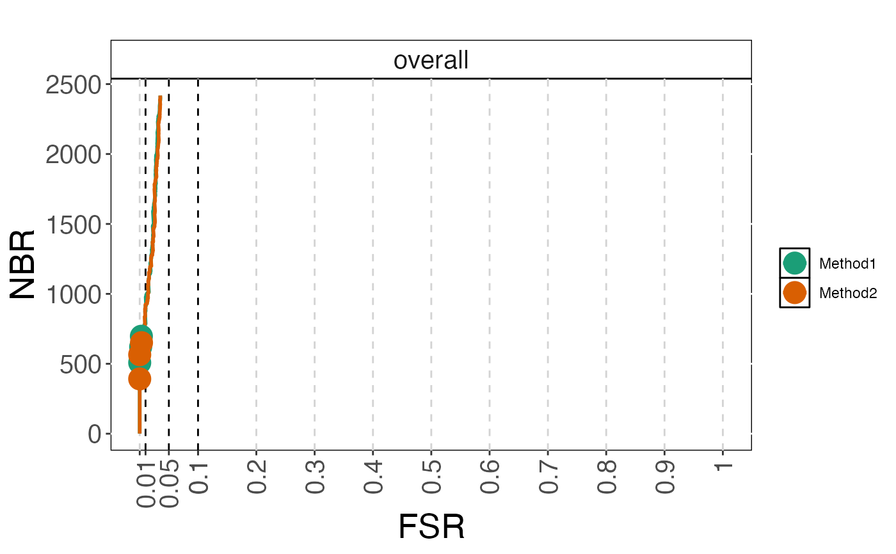

R/plot_methods.R
plot_fsrnbrcurve.RdPlot the number of features with an s-value below a threshold vs the observed false sign rate (FSR), for given adjusted p-value thresholds and/or as curves traced out by considering all threshold values.
A COBRAPlot object.
A character string giving the title of the plot.
A numeric value giving the size of the strip text, when the results are stratified by an annotation.
A character string giving the color of the title.
A numeric value giving the size of the plot characters.
A numeric vector with two elements, giving the lower and upper boundary of the x-axis, respectively.
A character vector giving the type of plot to construct. Can be any combination of the two elements "curve" and "points".
The line width used for plotting
A ggplot object
data(cobradata_example_sval)
cobraperf <- calculate_performance(cobradata_example_sval,
cont_truth = "logFC",
aspects = c("fsrnbr", "fsrnbrcurve"))
#> column Method3 is being ignored for FSR/NBR calculations
#> column Method3 is being ignored for FSRNBR calculations
cobraplot <- prepare_data_for_plot(cobraperf, colorscheme = "Dark2",
incltruth = TRUE)
plot_fsrnbrcurve(cobraplot, plottype = c("curve", "points"))
